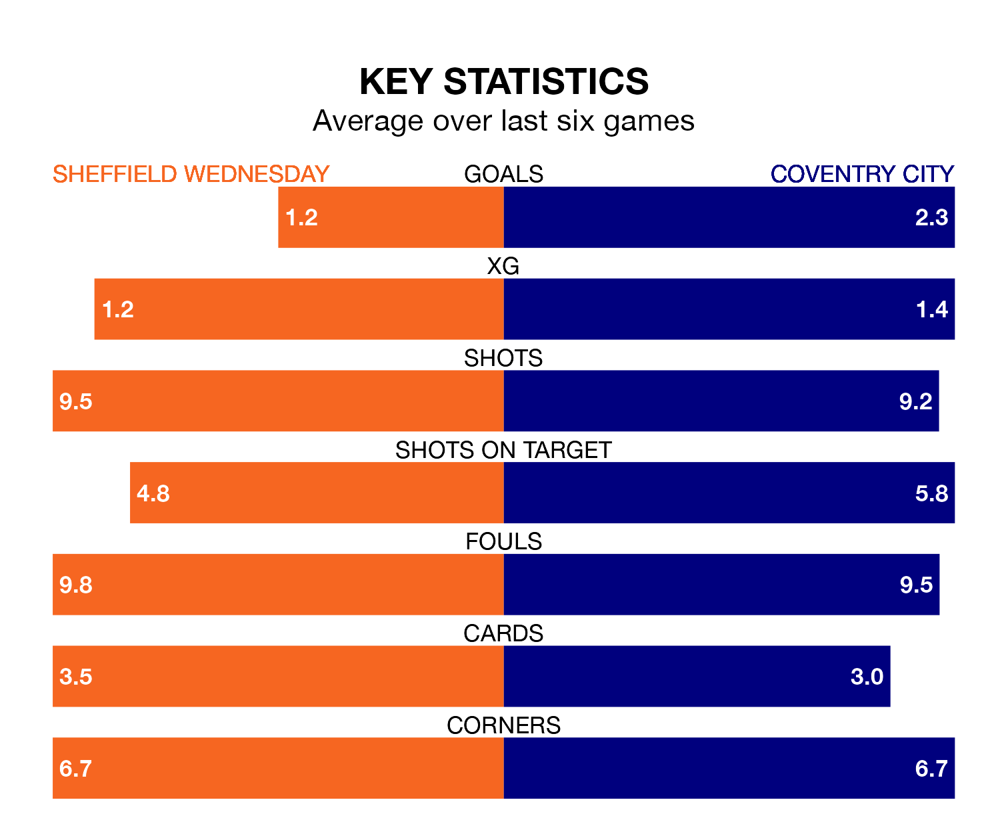

Coventry City face Sheffield Wednesday on Saturday seeking to protect their formidable unbeaten run in EFL Championship.
The Sky Blues are unbeaten in eight, with five wins and three draws, ahead of the 3pm kick-off.
They face a Wednesday team who have won four and lost four over the same number of games.
Wednesday are 22nd in the table after 27 games, of which they have won six and drawn four, earning 22 points.
Coventry are 16 places ahead of the Owls in sixth, with 10 wins and 10 draws putting them on 40 points.
With 21 goals in 27 games so far this season, the hosts are the league's lowest scorers with 0.8 goals per game. And they are conceding more than average, letting in 44 goals at a rate of 1.6 per game.
City, meanwhile, are above average scorers, with 1.5 goals per game, compared to a league average of 1.4. They have conceded 1.1 goals per game.
Wednesday's last match was on January 13, a 4-0 loss against Southampton.
Coventry beat Leicester City 3-1 last time out, also on January 13, with Callum O'Hare (two) and Milan van Ewijk on the scoresheet.
Saturday's match will be refereed by Anthony Backhouse, who has taken charge of six EFL Championship games so far this season, issuing no red cards and booking 27 players. He has awarded two penalties.
The last Wednesday game Backhouse refereed was a 3-0 away loss to Swansea City on September 23. His last Coventry match was their 0-0 draw at home against Stoke City on November 11.
Updated: 06:13 (UTC), 18/01/24